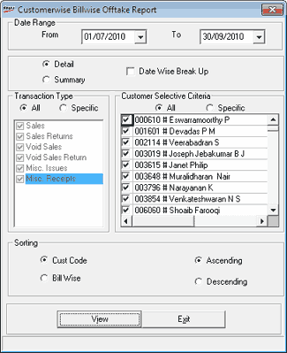

The Customer Bill-wise report provides bill-wise transaction details for customers. It can be generated bill-wise:
For all customers
For a specific customer
Based on transaction pertaining to sales, sales returns, cancelled sales, cancelled sales returns, miscellaneous issues and/ or miscellaneous receipts
How to reach: Reports > MIS > Customer Offtake > Bill-wise
The Customerwise Billwise Offtake Report window is displayed.

Date Range: By default, the From and To are the current Shoper date. You can enter any date range but the To date cannot be greater than the Shoper date.
Select Detail or Summary to display the corresponding type of report.
Date Wise Break Up: Select to display the report with date-wise breakup.
Transaction Type: Select All or Specific. If you have selected Specific, choose the required type/s from the list.
Customer Selective Criteria: Select All or Specific. If you have selected Specific, choose the required customer/s from the list.
Sorting: Select Cust Code or Bill Wise to sort the report based on customer code or bill number (i.e., Doc No of a bill) respectively.
Select Ascending or Descending to arrange the lines in the report accordingly.